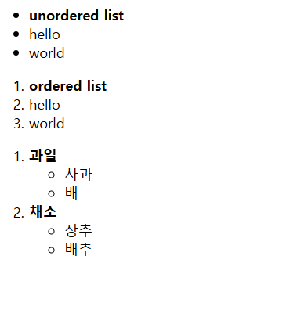

글자 태그 중 목록 태그에 대해 알아보자.
목록 태그는 주로 네비게이션 메뉴 만드는 데 쓰인다. 다음 3가지의 태그가 있다.
ul : unordered list로 순서 없는 목록을 만든다.
ol : ordered list로 순서 있는 목록을 만든다.
li : list item로 위 두개의 태그 안에 들어가 목록의 항목을 만든다.
다음은 목록 태그 사용 예시이다.
<!--목록 태그-->
<!DOCTYPE html>
<html>
<head>
<title>목록 태그</title>
<style type="text/css">
</style>
</head>
<body>
<ul>
<li><b>unordered list</b></li>
<li>hello</li>
<li>world</li>
</ul>
<ol>
<li><b>ordered list</b></li>
<li>hello</li>
<li>world</li>
</ol>
<ol>
<li>
<b>과일</b>
<ul>
<li>사과</li>
<li>배</li>
</ul>
</li>
<li>
<b>채소</b>
<ul>
<li>상추</li>
<li>배추</li>
</ul>
</li>
</ol>
</body>
</html>

ul은 항목 앞에 점이 있고 ol은 항목에 숫자가 순서대로 붙는다.
과일과 채소 목록에서 볼 수 있듯이 <li> 태그 안에 또 목록을 만들 수도 있다.